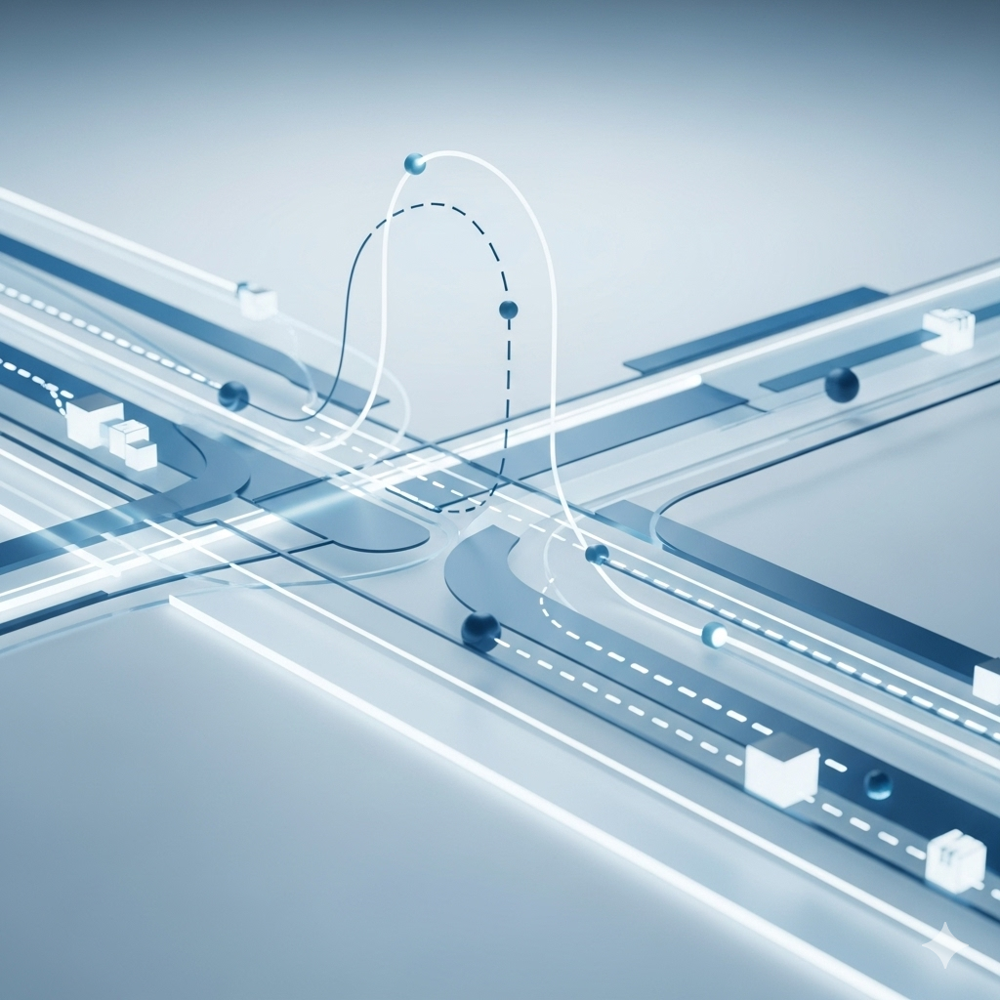
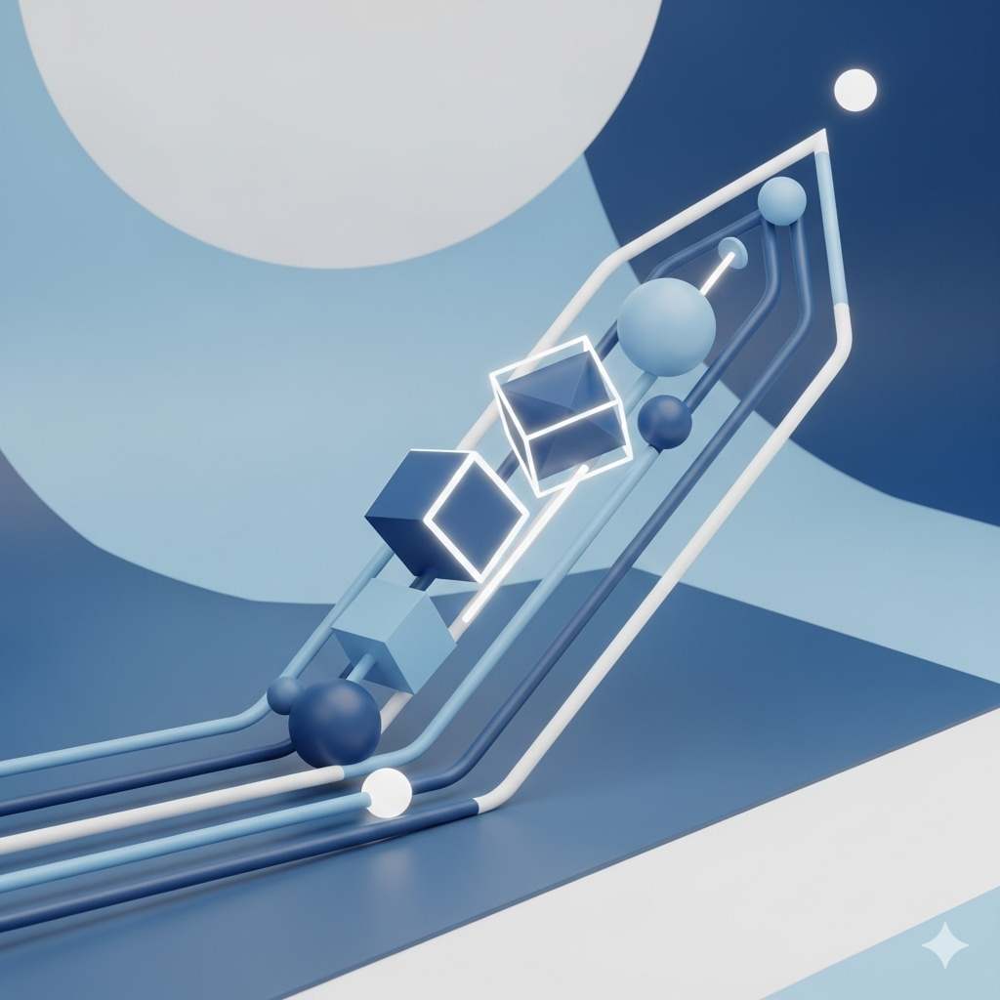

Seguridad
Prevención y detección en tiempo real para proteger tus activos y personal. Utiliza tus cámaras de seguridad existentes para una vigilancia proactiva y automatizada.
- Alertas ante intrusiones, caídas o presencia en zonas restringidas.
- Integración de cámaras y sensores existentes.
- Análisis de movimiento y detección de amenazas en tiempo real.
Logística
Optimiza la gestión de tus activos móviles y flotas. Transforma la operación logística con seguimiento en tiempo real y análisis inteligente.
- Tracking y optimización de flotas.
- Monitoreo de inventarios y gestión de carga en tiempo real.
- Análisis de rutas para una mayor eficiencia.

Eficiencia Productiva
Convierte tus datos visuales en decisiones estratégicas. Identifica oportunidades de mejora y mantenimientos predictivos en tu línea de producción.
- Detección de interrupciones y gestión de averías.
- Control de lubricación y detección de fugas.
- Monitoreo de procesos y medición del tiempo de ciclo.

Experiencia del Cliente
Analiza el comportamiento del público para optimizar la atención en tus puntos de venta o centros de servicio.
- Conteo de personas y gestión de colas.
- Análisis de recorridos y lugares de detención.
- Medición de tiempos de espera.